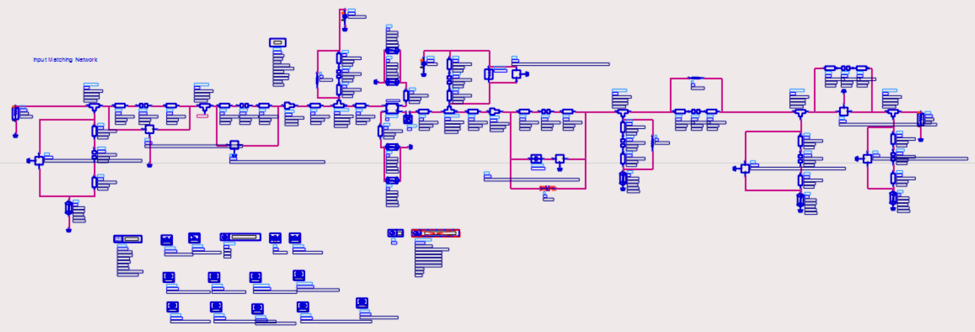
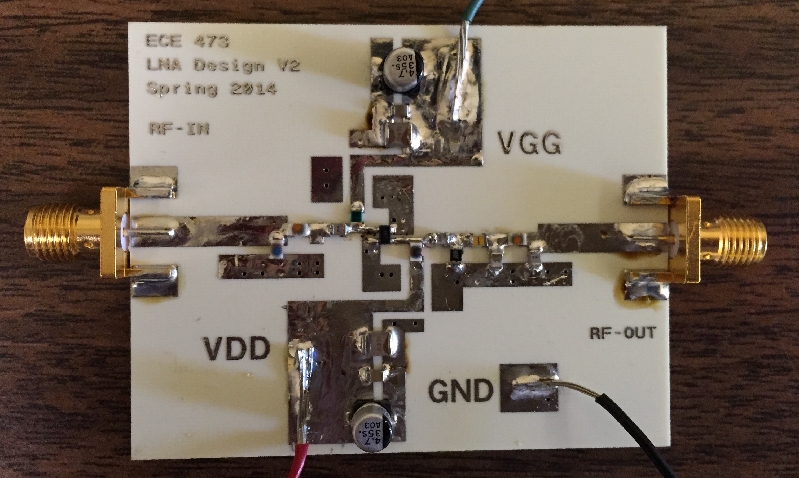

Education
MASc. Electrical Eng. - University of Toronto
Sept 2016 - Present
• Research Area: CMOS Optical Receiver Circuits
BASc. Electrical Engineering (Co-op, Hons.) - University of Waterloo
Sept 2011 - June 2016
Major Technical Courses
ECE 444: Integrated Analog Circuits
• MOS/Bipolar Op-amps, feedback compensation, stability, A/D, D/A, active loads
ECE 477: Photonics Devices and Systems
• Optical Waveguides, Optical Solitons, photonic sources and transmitters, lasers, transceivers, photonic Network
ECE 404: Geometrical and Physical Optics
• Electromagnetic waves and the nature of light.
• Geometrical optics, aberrations. Physical Optics: interference, Fraunhofer and Fresnel diffraction, polarization
ECE 637: Digital Integrated Circuits (Graduate course)
• CMOS Arithmetic Circuits; Detail MOS models and second order effects, miller capacitances
• Synchronizers and arbiters; Single-phase and two-phase clocking, Candence simulations, montecarlo, interconnect
Half Adder in 180 nm Technology
16 Bit 1 GHz Adder in 180 nm Technology
ECE 445: Integrated Digital Electronics
• CMOS inverter, combinational CMOS circuit design - logic styles for low power, logical effort in high performance circuits
• Interconnect parasitic, clocking and timing considerations in digital VLSIs, sequential CMOS circuit design - flip-flops, Candence simulations
• Labs: 8-input AND gate, TSPC flip-flop design and timing specifications
ECE 463: Power Electronic Converters
• Power conditioning, waveform quality, input and output filter design, switching characteristics
• Power losses of power semiconductor devices, analysis, simulations, design, control and applications of power electronic converters
• Labs: Diode Rectifiers, Thyristors converter, DC-DC/AC-DC with IGBT, DC motor speed control with choppers,
ECE 473: RF and Microwave Circuits
• Scattering matrix, multiport RF networks, RF planar technology, lumped and distributed microstrip circuits
• Microwave couplers, Hybrids, resonators, filters, Low-noise amplifiers (LNAs), RF oscillators and mixers, CAD tools for RF


Achieved the best noise figure (1.1 dB) in class for the design of Low Noise Amplifier (gain:18 dB, Center Freq:1 GHz, BW=350 MHz). (Team: Dhruv Patel, Isaiah Thompson)
Certification
NI Certified LabVIEW Associate Developer - 2015
Expertise
Hardware:
• Experience with Microelectronics and Optoelectronics Laboratories
• Ocassionally worked in clean room facility
• Solid PCB design and soldering skills
Instruments:
• High-end Oscilloscopes, Spectrum Analyzers, VNA, Current Probes, Power Supplies, Pattern Generators, Frequency Counters, DMMs,
• Spectrometers, Solar Simulators, Tunable Light Sources and precision Optical stages/apertures
Communication Protocols:
• I2C, USB, SPI, JTAG, GPIB
Software:
EE software:
• Cadence Virtuoso (Schematics/Layout), Cadence Allegro/Orcad, Ltspice, HSpice, ADS, Labview, Qurtus, Altium, Eagle, Hyperlynx power-integrity
Programming and Web:
• java, c#, c, c++, matlab, python, vhdl, verilog, assembly, .net, html, css
Publishing Tools:
• Latex, MS office suit, inkscape